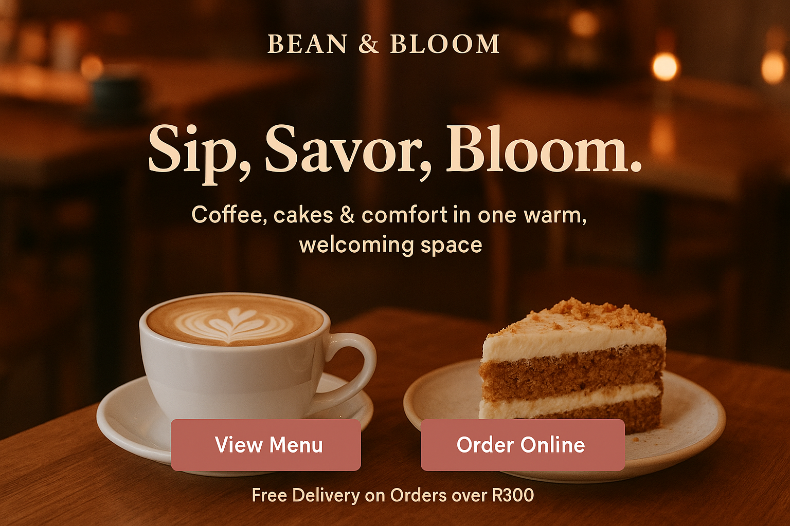

Makes A Difference

Bean And Bloom is love by many. this is how it looks on Monday Mornings. people come here to find peace and take a break from reality.
"Coffee, Cakes & Comfort In Every Cup"
At Bean & Bloom we offer fresh coffee and delicious treats. The cafe with passion for creating a warm, welcoming space where people could slow down and savor life's simple joys. Rooted in Umhlanga Durban South Africa, the cafe began as a small family business inpired by the love of brewed coffee coffee, and home made desserts and the sense of community that cafes brings.
Our motive was never just about serving coffee it as about crafting meaningful experiences, where every cup tells a story of care and every slice of cake carries the comfort of home. At Bean & Bloom, we believe that coffee is more than a drink ; it's a way to connect, to pause, and to bloom in the midst of everyday life.
Bean & Bloom Cafe is turning one, and we couldn't have done it without you! Join us as we celebrate our very first annivesary with a day full of coffee, cakes, laugher, and community. To mark this special milestone, we'll be hosting live music, serving limited edition drinks and desserts, and treating our guests to exciting giveaways. It's more than just an annivesary it's a thank you to everyone who has supported us on this journey. Come sip, savor and celebrate with us at Bean & Bloom Cafe because this bloom is only possible with you.
Bean And Bloom is love by many. this is how it looks on Monday Mornings. people come here to find peace and take a break from reality.